石手寺/愛媛県松山市
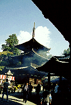 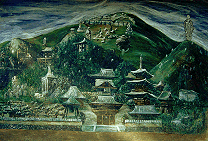 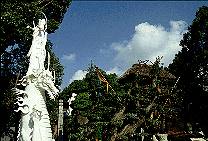
四国有数の大寺院、石手寺は多くの参拝客で賑わっている。
ここは八十八ケ所の五十一番札所としてお遍路さんの姿も多い。ガイドブックなどを見ると国宝の山門や三重の塔などの写真などが載っており、いかにも古刹の雰囲気、なんて感じで紹介されている。
確かに寺の歴史は古い。観光バスもじゃんじゃん来るし、土産物も充実しており門前のうどん屋も旨い。
しかし、古刹然とした佇まいはこの寺の半分でしかない。いうなれば古刹の「石手寺」という素材に怪しいオーラをたっぷりとコーティングした「半☆古刹」で、残りの半分はどこに出しても恥ずかしくない位の立派なマッドな寺なのである。
・・・ここでどうしてもこの寺を「古いお寺って雰囲気があってス・テ・キ・」と思いたいアナタにアドバイス。決して参道、山門、本堂、三重の塔などのエリアから足を踏み外さないように。そうすれば
門前の怪しい彫刻群にさえチト目をつぶればアナタの中で石手寺は楽しい青春のメモリーとして1・程度の容量で保存されることでしょう。これから四国をまわる予定のお遍路さんもここでは寄り道しないでさっさと次の札所に向かいましょう。
決して本堂の裏には行かないように。ロクな事がありませんよ。
・・・という訳で因果者の皆さん、本堂の裏手に何があるのか説明しよう。
お遍路さんや参拝客がムニャムニャやっている本堂の左手に怪しい小屋がありそこに木で出来た怪しい像が見える。ここからがマッド石手寺の本当のスタートなのだ。
この像、大きな木から切り出した一木造りなのだが、やけに細長い感じがかなり奇妙。そういえば門前にあった変テコな像もこの芸風だった。個人的にトーテムポール仏と命名する。
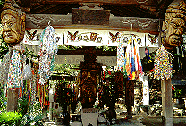 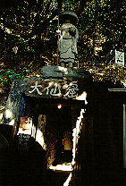 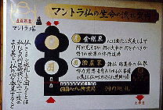
その像に惹かれてフラフラと本堂の裏手に行くと今度は山肌に（本堂のすぐ裏手は山）何やら怪しい洞穴の入り口が見える。「マントラ洞」と題されたその洞窟がまさに裏石手寺への入り口なのである。
洞窟内に入ると中は右と正面の二手に道が分かれていてＬ字型になっている。で、正面の道を行く。
薄暗い中、閻魔様がいきなりお出迎え。そこにフラッシュ一閃。真っ暗な中のフラッシュは結構効く。間違えてここに来てしまった一般人も大抵ここでビビって引き返す。
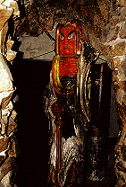 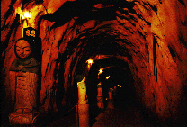
しかしこれは因果者と一般人との振い別け作業なので怯まず先に進んで頂きたい。
で、フラッシュの洗礼を受け、手探りで歩いて行くと徐々に薄暗闇に眼が慣れてくる。延々と続く幅2メートル程度の通路は中央をロープで仕切っており、行き帰りの2レーンを確保しているのだが、そのロープを支えているのがコレまた延々と並ぶお地蔵さん。しかも着衣、着帽。かなり無気味。
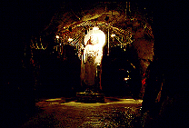 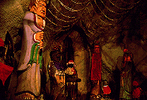 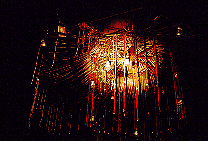
で、お地蔵さんの頭撫でながら歩いて行くと、何やら先の方で灯が点滅しているのが判る。少し広くなったところにデカい石仏がいるのだが、問題はその頭上であった。ロープと電飾でビッカンビッカンに彩られた傘状の見た事も無い独特のセンスによる飾りがマッド係数を高めてくれている。その他、周りには先程見かけたトーテムポール仏の仲間たちが並んでいる。
唖然としてまた先へ進む。今度は中央に独鈷が置いてあり何やらセンサー仕掛けの御様子。しかしいくら触っても、叩いても起動せず。メンテちゃんとやっとけよ。
さらに先に進むと、突然外に出る。本堂の後ろにあった山の裏側に出たのだ。
しかしこれだけでは終わらない。薄暗い闇から突然外に出たので最初は良く見えなかったのだが、落ち着いて辺りを見回すと物凄い事になっているではないか・・・
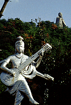 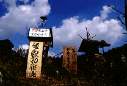 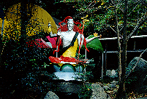
・・・そこは一面に奇妙な仏像が点在する悪夢のようなところだった。仏像は主に銀ペイントか白ペイントされたもので、大きさは等身大かそれ以上。それが半分廃墟と化した庭園に点在しているのである。
さらに仏像越しに向こうの山を見れば巨大な弘法大師像が山頂にある。
そしてその一画には何枚もの奇妙な絵画が雨曝しになって飾ってあるのだ。
まさにストレンジガーデン、狂気の世界である。
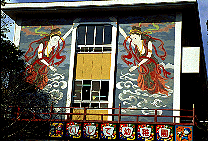
さらにその一画には付属の幼稚園があり、なにやらイベントが催されているようでのほほ〜んとした童謡が流れてきて、子供達の嬌声なども聞こえてくる。こんなトコで日常生活を送る園児達・・・シュール過ぎる。
で、その庭園の一画にあるマントラ塔と呼ばれる建物に入る。中国風の赤門赤塀の先にある金色のUFO型の建物。もう何も言うまい。
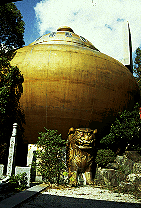 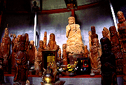 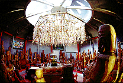
で、内部。一階は大した事ないのだが、二階は狂気の集大成みたいなところであった。
階段を昇ると擂り鉢状のホールの中央部に出る。そして周りをぐるりと取り囲んでいるのはトーテムポール仏の大群であった。このトーテムポール仏の合間にソファーが幾つか置かれている。あなたもトーテムポール仏と一緒に円卓会議に参加してくだされ、という趣向。呑み屋から持ってきたみたいな赤い安ソファーひとつに座ってみる。なんだか自分もトーテムポール仏群の一員になったような気がして・・・気分が悪い。
天井を見上げればステンドグラスにシャンデリア、とことん趣味の読めないところである。
げっそりしながら洞窟へ戻る。洞窟の出口（というか一番最初に入った入り口）の手前で左に折れ洞窟八十八ケ所巡りを通るとまたしてもトーテムポール仏密集地帯があり、それを過ぎるとやっと洞窟から解放される。
で、表の石手寺に戻る。相もかわらず沢山のお遍路さんが来てもうもうとした香煙の中で拝んでいる。普段であればそれは神々しい光景なのだが、この時はそんな神々しい光景さえもがやけに俗っぽく見えたものだ。
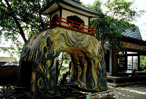
1999.11.
再訪記はこちら
珍寺大道場 HOME